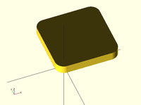

Displays the minkowski sum of child nodes.
Usage example:
Say you have a flat box, and you want a rounded edge. There are multiple ways to do this (for example, see hull below), but minkowski is elegant. Take your box, and a cylinder:
$fn=50;
cube([10,10,1]);
cylinder(r=2,h=1);
Then, do a minkowski sum of them (note that the outer dimensions of the box are now 10+2+2 = 14 units by 14 units by 2 units high as the heights of the objects are summed):
$fn=50;
minkowski()
{
cube([10,10,1]);
cylinder(r=2,h=1);
}
NB: The origin of the second object is used for the addition. If the second object is not centered, then the addition is asymmetric. The following minkowski sums are different: the first expands the original cube by 0.5 units in all directions, both positive and negative. The second expands it by +1 in each positive direction, but doesn't expand in the negative directions.
minkowski() {
cube([10, 10, 1]);
cylinder(1, center=true);
}
minkowski() {
cube([10, 10, 1]);
cylinder(1);
}
Warning: for high values of $fn the minkowski sum may end up consuming lots of CPU and memory, since it has to combine every child node of each element with all the nodes of each other element. So if for example $fn=100 and you combine two cylinders, then it does not just perform 200 operations as with two independent cylinders, but 100*100 = 10000 operations.
Created with the Personal Edition of HelpNDoc: Write eBooks for the Kindle